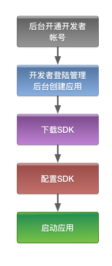
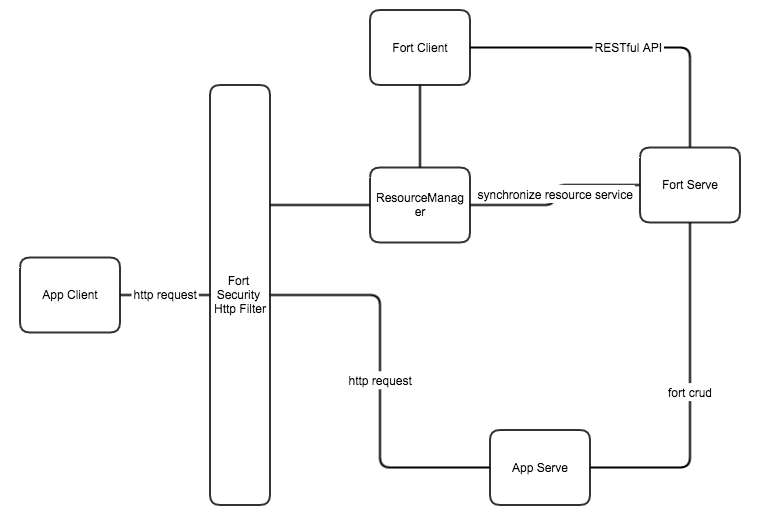

Fort
简介
Fort 是一个公共安全平台，用于安全访问你的Java应用，是基于Spring4开发的应用程序
特点
- 全面的身份验证和授权
- 强大的管理后台
- 快速集成，无需理会持久层
- 缓存更新服务
集成流程图

平台架构

最低要求
- jdk 7+
- spring 4.2.5.RELEASE+
前期工作
测试Fort后台管理地址 http://180.167.77.60:30002
本文档很多地方和fort.yml中的配置有关，和配置有关的地方使用$符号标识
创建应用
登录后台管理，创建第一个应用。
Maven POM
使用之前必须配置Maven私服
<dependency>
<groupId>com.boyuanitsm</groupId>
<artifactId>fort-sdk</artifactId>
<version>${fort.sdk.version}</version>
</dependency>
配置Fort
Spring component scan
由于SDK是基于Spring4开发并使用Spring Bean管理对象，开启注解扫描
在Spring application.xml加入：
<context:component-scan base-package="com.boyuanitsm.fort.sdk"/>
Fort security http filter
配置安全Http过滤器，这个过滤器的功能是：
- 过滤请求，达到权限控制的目的
- 处理登录登出请求
在项目的web.xml加入：
<filter>
<filter-name>securityHttpFilter</filter-name>
<filter-class>org.springframework.web.filter.DelegatingFilterProxy</filter-class>
</filter>
<filter-mapping>
<filter-name>securityHttpFilter</filter-name>
<url-pattern>/*</url-pattern>
</filter-mapping>
fort.yml
Fort SDK 的配置文件，以maven项目为例，将fort.yml放置在src/main/resource/目录内
# ===================================================================
# Fort SDK configuration
# ===================================================================
fort:
# 应用模块
app:
# fort server 的基础url
server-base: http://172.16.8.21:9800
# 应用 key
app-key: zwecds24bjmm
# 应用 secret
app-secret: b6yulgieomdu
# 资源同步服务
resource-sync:
# 是否启用
enable: true
# 身份验证模块
authentication:
# 用户没有权限访问时，重定向的地址
unauthorized-return: /unauthorized.html
# 登录
login:
# 登录URL, 登录时发送POST请求到这个地址, 用户名的参数名为f_username, 密码的参数名为f_password
url: /fort/login
# 登录成功时，重定向的地址, 登录的时候可以发送success_return参数来临时改变这个地址
success-return: /
# 登录失败时，重定向的地址, 登录的时候可以发送error_return参数来临时改变这个地址
error-return: /login.jsp?error=1
# 登录页面地址
login-view: /login.jsp
# 登出
logout:
# 登出URL
url: /fort/logout
# 登出成功时，重定向的地址, 登出的时候可以发送success_return参数来临时改变这个地址
success-return: /
# 用户模块
user:
# 创建新用户时，用户拥有的角色名
default-roles:
- ROLE_USER
# 创建新用户时，用户所属组名
default-groups:
- WORK_GROUP
# Cookie 模块
cookie:
# cookie的域,可以使多个web服务器共享cookie,如果错误设置domain可能会导致fort失效!
domain: localhost
# cookie 有效期, 天, 应与应用的会话时间相同
max-age: 7
# 不需要过滤的资源
ignores:
- /*/*.jpg
- /*/*.png
- /*/*.gif
- /*/*.css
- /*/*.js
启动
至此已将Fort SDK集成到您的Java应用中，可以启动了，如果集成成功会在控制台打印出日志
Starting fort
Started fort in 576 ms
Connection fort resource synchronize service success!
需要帮助
遇到问题可以到GitLab上提issue，链接地址：http://180.167.77.60:30002/ppd/fort-sdk/issues